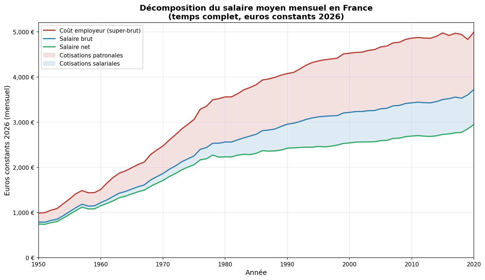

1. Objectif
Ce document décrit la méthodologie utilisée pour construire un graphique montrant l'évolution du salaire moyen mensuel d'un salarié à temps complet en France, décomposé en trois niveaux :
- Salaire net — ce que le salarié perçoit effectivement
- Salaire brut — net + cotisations salariales (y.c. CSG/CRDS)
- Coût employeur (super-brut) — brut + cotisations patronales
L'ensemble est exprimé en euros constants 2026 afin de neutraliser l'effet de l'inflation et de permettre une lecture en termes de pouvoir d'achat.

2. Sources de données
Toutes les données proviennent de l'INSEE (Institut National de la Statistique et des Études Économiques), dossier INSEE 2020 (base Tous salariés 2018, séries longues sur les salaires).
| Fichier | Contenu | Années | Rôle |
|---|---|---|---|
| EQTP01.xlsx | Salaire net annuel moyen (en euros courants) | 1996–2018 | Ancrage du niveau absolu du salaire net |
| EVO_CR.xlsx | Taux de croissance annuels du salaire net moyen (euros courants) | 1951–2018 | Extension de la série en amont de 1996 |
| CS3.xlsx | Taux de cotisations salariales par tranche de salaire brut (y.c. CSG et CRDS), non-cadres et cadres | 1950–2020 | Passage du net au brut (décomposition par tranche) |
| CP2.xlsx | Taux de cotisations patronales par tranche de salaire brut, non-cadres et cadres | 1950–2020 | Passage du brut au coût employeur (décomposition par tranche) |
| PLAFOND.xlsx | Plafond mensuel brut de la Sécurité sociale (en euros courants) | 1950–2020 | Seuil de transition entre tranches de cotisation |
| inflation.xlsx | Indice des prix à la consommation (base 100 en 1951) | 1951–2020 | Conversion en euros constants |
3. Méthodologie
3.1 Vue d'ensemble
La construction du graphique suit cinq étapes :
- Reconstituer le salaire net annuel moyen sur la période 1950–2018 en combinant les niveaux absolus (EQTP01) et les taux de croissance (EVO_CR).
- Calculer le salaire brut à partir du salaire net et des taux de cotisations salariales par tranche (CS3), en utilisant le plafond de la Sécurité sociale (PLAFOND) comme seuil entre tranches.
- Calculer le coût employeur à partir du salaire brut et des taux de cotisations patronales par tranche (CP2).
- Convertir en euros constants 2026 à l'aide de l'indice des prix à la consommation.
- Convertir en valeurs mensuelles en divisant les montants annuels par 12.
3.2 Reconstitution du salaire net (étape 1)
Le fichier EQTP01.xlsx fournit le salaire net annuel moyen d'un salarié à temps complet pour la période 1996–2018. Ces valeurs constituent l'ancrage de la série.
Pour étendre la série en amont jusqu'en 1950, on utilise les taux de croissance annuels du salaire net moyen issus de EVO_CR.xlsx (colonne « Salaire net moyen des salariés à temps complet »). On procède par rétro-extrapolation :
où gt est le taux de croissance en euros courants du salaire net pour l'année t, tel que publié dans EVO_CR. On part de la valeur connue en 1996 (18 431 €/an) et on remonte année par année jusqu'en 1950.
3.3 Passage au brut (étape 2) : calcul par tranche
Les cotisations sociales en France s'appliquent par tranche de salaire brut, délimitées par des multiples du plafond de la Sécurité sociale (P). Les taux diffèrent entre la partie du salaire en dessous du plafond (tranche 1) et la partie au-dessus (tranche 2). Le fichier CS3.xlsx fournit ces taux pour les salariés non-cadres, y compris CSG et CRDS :
- ts1 : taux salarial sur la partie ≤ 1 plafond
- ts2 : taux salarial sur la partie entre 1 et 3 plafonds
Le plafond mensuel brut P est lu dans PLAFOND.xlsx (annualisé par multiplication par 12).
La résolution du salaire brut G à partir du salaire net procède en deux temps :
⇒ G = net ÷ (1 − ts1/100)
On retient ce résultat si G ≤ P × 12.
net = G × (1 − ts2/100) − P×12 × (ts1 − ts2)/100
⇒ G = (net + P×12 × (ts1 − ts2)/100) ÷ (1 − ts2/100)
L'algorithme essaie d'abord le cas A. Si le brut résultant dépasse le plafond, il bascule automatiquement sur le cas B. La cohérence est vérifiée en recalculant le net à partir du brut obtenu (erreur maximale : 0 €).
En pratique, le cas B (deux tranches) s'applique pour les années 1950–1961 et ponctuellement en 1974 et 1980, où le salaire moyen excédait le plafond de la Sécurité sociale. À partir de 1982, le salaire moyen reste en dessous du plafond :
| Année | Brut/mois | Plafond/mois | Ratio | Tranches |
|---|---|---|---|---|
| 1950 | 37 € | 34 € | 107,5 % | 1 + 2 |
| 1960 | 98 € | 87 € | 112,5 % | 1 + 2 |
| 1970 | 221 € | 229 € | 96,6 % | 1 seule |
| 1980 | 765 € | 764 € | 100,1 % | 1 + 2 |
| 1990 | 1 624 € | 1 665 € | 97,5 % | 1 seule |
| 2000 | 2 096 € | 2 241 € | 93,5 % | 1 seule |
| 2010 | 2 648 € | 2 885 € | 91,8 % | 1 seule |
| 2018 | 2 968 € | 3 311 € | 89,6 % | 1 seule |
3.4 Passage au coût employeur (étape 3)
Le fichier CP2.xlsx fournit les taux de cotisations patronales par tranche pour les salariés non-cadres :
- tp1 : taux patronal sur la partie ≤ 1 plafond
- tp2 : taux patronal sur la partie entre 1 et 3 plafonds
Les taux effectifs (moyens pondérés entre tranches) qui en résultent sont les suivants :
| Année | ts effectif | tp effectif | Mode |
|---|---|---|---|
| 1950 | 5,6 % | 24,8 % | 2 tranches |
| 1960 | 5,5 % | 24,1 % | 2 tranches |
| 1970 | 8,2 % | 32,8 % | 1 tranche |
| 1980 | 12,8 % | 39,0 % | 2 tranches |
| 1990 | 17,9 % | 37,9 % | 1 tranche |
| 2000 | 21,0 % | 40,8 % | 1 tranche |
| 2010 | 21,5 % | 41,7 % | 1 tranche |
| 2018 | 21,4 % | 39,9 % | 1 tranche |
3.5 Conversion en euros constants 2026 (étape 4)
Le fichier inflation.xlsx fournit un indice des prix à la consommation (ensemble des ménages, y compris tabac) en base 100 au 1er janvier 1951, couvrant la période 1951–2020.
L'indice a été étendu de 2020 à 2026 à l'aide des taux d'inflation annuels moyens publiés par l'INSEE :
| Année | Inflation annuelle moyenne | Indice (base 100 = 1951) | Source |
|---|---|---|---|
| 2020 | +0,5 % | 1 581,7 | inflation.xlsx |
| 2021 | +1,6 % | 1 607,0 | INSEE |
| 2022 | +5,2 % | 1 690,6 | INSEE |
| 2023 | +4,9 % | 1 773,4 | INSEE |
| 2024 | +2,0 % | 1 808,9 | INSEE |
| 2025 | +0,9 % | 1 825,2 | INSEE |
| 2026 | +1,5 % (est.) | 1 852,5 | Estimation |
Le déflateur appliqué à chaque année est :
L'indice de 1950 n'étant pas présent dans le fichier (base 1951), il a été estimé en déduisant l'inflation de 1951 (+16,7 %, issu de la colonne Prix de EVO_CR) : IPC1950 = 100 / 1,167 ≈ 85,7.
3.6 Conversion en valeurs mensuelles (étape 5)
Les salaires nets issus de EQTP01 sont exprimés en euros annuels. Pour obtenir des valeurs mensuelles comparables, tous les montants (net, brut, coût employeur) sont divisés par 12.
4. Résultats
| Année | Salaire net | Salaire brut | Coût employeur | ts eff. (%) | tp eff. (%) |
|---|---|---|---|---|---|
| 1950 | 746 € | 791 € | 986 € | 5,6 | 24,8 |
| 1960 | 1 151 € | 1 218 € | 1 511 € | 5,5 | 24,1 |
| 1970 | 1 710 € | 1 862 € | 2 473 € | 8,2 | 32,8 |
| 1980 | 2 234 € | 2 562 € | 3 560 € | 12,8 | 39,0 |
| 1990 | 2 425 € | 2 955 € | 4 077 € | 17,9 | 37,9 |
| 2000 | 2 541 € | 3 217 € | 4 528 € | 21,0 | 40,8 |
| 2010 | 2 693 € | 3 429 € | 4 860 € | 21,5 | 41,7 |
| 2018 | 2 775 € | 3 532 € | 4 941 € | 21,4 | 39,9 |
Valeurs mensuelles en euros constants 2026. ts eff. et tp eff. = taux effectifs (moyens pondérés entre tranches lorsque le brut excède le plafond). Barème non-cadres, y.c. CSG/CRDS.
5. Limites et précautions d'interprétation
- Barème non-cadres. Les taux de cotisation utilisés sont ceux applicables aux salariés non-cadres. Les barèmes cadres diffèrent pour la retraite complémentaire (AGIRC puis Agirc-Arrco), l'APEC, la prévoyance et la CET. Le salaire moyen étant une moyenne pondérée de cadres et non-cadres, les taux effectifs réels se situent entre les deux barèmes. Le calcul par tranche (CS3/CP2) assure en revanche une prise en compte correcte du dépassement du plafond dans les années 1950–1980.
- Allègements de cotisations patronales. Depuis les années 1990, d'importants dispositifs d'allègement des cotisations patronales sur les bas salaires ont été mis en place (ristourne Juppé, loi Fillon, CICE, etc.). Ces allègements ne sont pas pris en compte ici : les taux utilisés sont les taux faciaux, non les taux effectifs. Le coût employeur réel pour les salaires proches du SMIC est donc surestimé à partir du milieu des années 1990.
- Périmètre géographique. Le champ couvert est la France métropolitaine jusqu'en 1999, puis la France hors Mayotte à partir de 2000 (source EQTP01).
- Champ des salariés. Les données couvrent les salariés du privé et des entreprises publiques, y compris les bénéficiaires de contrats aidés, apprentis et stagiaires, mais hors salariés agricoles et des particuliers-employeurs.
- Rétro-extrapolation avant 1996. Avant 1996, le niveau du salaire net est reconstitué par chaînage arrière des taux de croissance. Toute erreur dans les taux de croissance se cumule sur la période. La cohérence de la série a été vérifiée par comparaison avec les ordres de grandeur connus du salaire moyen dans les années 1950–1980.
- Inflation 2026. Le taux d'inflation retenu pour 2026 (+1,5 %) est une estimation. L'incidence sur les résultats est négligeable (modification proportionnelle de l'ensemble des valeurs).
- Passage aux 35 heures. La durée légale hebdomadaire est passée de 40 à 39 heures en 1982, puis à 35 heures en 2000 (entreprises de plus de 20 salariés) et 2002 (autres). Le salaire est exprimé en équivalent temps plein et les taux de cotisation ne sont pas ajustés pour la durée du travail.
6. Références
-
INSEE, Base Tous salariés 2018 — séries longues sur les salaires,
fichiers EQTP01, EVO_CR, PLAFOND, inflation.
https://www.insee.fr/fr/statistiques/4268033 -
INSEE, En 2025, nouveau ralentissement des prix à la consommation en moyenne
annuelle, Informations rapides n°8, janvier 2026.
https://www.insee.fr/fr/statistiques/8726461 -
INSEE, En mars 2026, les prix à la consommation augmentent de 1,7 % sur un an,
Informations rapides n°83, avril 2026.
https://www.insee.fr/fr/statistiques/8964202 -
INSEE, Accélération des prix à la consommation en moyenne en 2021,
Informations rapides n°10, janvier 2022.
https://www.insee.fr/fr/statistiques/6036866